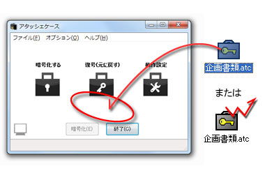
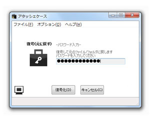
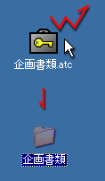

これも暗号化と同じく、アイコン、または開いたフォーム上に、暗号化したファイルをドラッグ＆ドロップするだけです。

暗号化と同じく、パスワードを求められますので、自分で設定したパスワードを入力して復号化してください。

アタッシェケースファイル（*.atc）が関連付けされていれば、暗号化ファイルを直接ダブルクリックするだけで復号化処理を行います。
さらに、パスワードを記憶させ、処理後アタッシェケースを終了するよう設定されていれば（→「基本設定」）、ウィンドウが開いたままになることなくファイルが復号化され、暗号/復号化をあまり意識することなく便利に使えます。

Created with the Personal Edition of HelpNDoc: Single source CHM, PDF, DOC and HTML Help creation